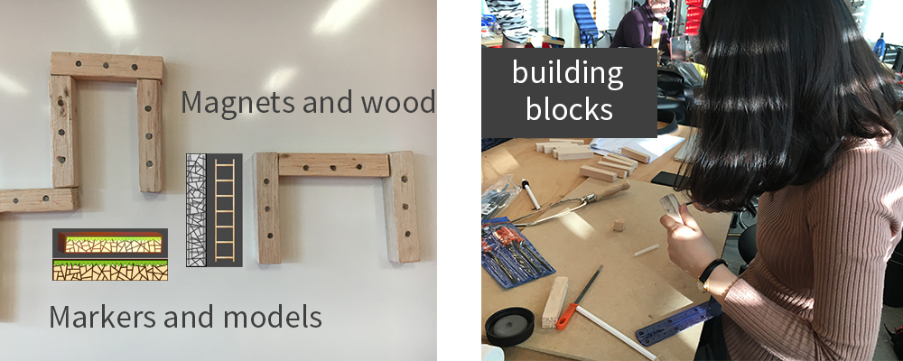
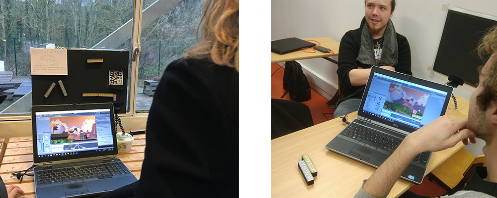

Project discription: As a Mixd Reality block-building product, our Piggy Pig & Magic Rainbow game orients to encourage the under-12s to develop an idea, i.e., the cyber world can be linked to certain components in physical world. The main scenario of the game is a Maze, where the character searches for a path leading to the Rainbow Flag. The project itself is a team game which requires real-time collaboration between two players.
Technology: We exploited Unity to construct the main scenario of the game, including the 3D game objects, the animations of characters, the interaction, and the game interfaces. Vuforia is employed to guarantee the MR experience, that is, to detect the targets in real world and to display the corresponding virtual objects in the respective positions. It is worth mentioning that we fabricated the physical items with a laser-cutting machine.
SYSTEM DESIGN: Our original idea was to make a MR block-building game, in which players build blocks in the real world(like lego) with a camera detecting the blocks to create a virtual scene on the screen. The story of our game goes like this: There are color flags in mid-air(one flag in each level), and the goal is to find a way to reach the flag by building the blocks. Another player can control the character by a joystick simultaneously to reach the flag. After collecting all the flags player win the game.
Development Process
week1 Generate initial idea.
We teamed up and did brainstorming, from which we got an initial idea about our project. Then we did the first period of design circle, gathering information. And also the first version storyboard. And conducted questionnaire, interviews with parents who have kids under-12s and their kids.
week2 Early information analysis, Prototype.
We extract information from the interviews last week and improve the first version of storyboard. During this week, we made a prototype out of the storyborad to illustrate all the intraction points. And in the prototype, we aimed our target users at kids under 12. And we conducted second round of interviews/user test with this prototype.
week3 Second round information analysis, Structure-building.
Based on the second round of interview, we made the third prototype. Then we started buil the structure for the project. The structure is built out of our third prototype, including the virtual reality part in Unity and Vuforia, the tangible part in the physical world. We thought how each part works and how they work together.
week4 Digital fabrication.
For the tangible part, we laser cut a magnetic board using black color painting and magnetic powder, and made building-blocks with magnet cylinders inside in digital fabrication lab. And we drew the marker for vuforia, sticked them on the building blocks.
week5 3D modeling, Scene polishing.
We did some demo in previous weeks and used a small ball representing the character. In this week, we got the final model for the characters and low-poly 3D models for the scene.

week6 System develop.
We combined the work we done separately before. And develop the whole system of the product, including the model animation, character controlling, all the animation of the models, virtual reality scenes,etc.
week7 Final test.
Last week before the final project exhibition. We tested our product, and got some feedbacks from the professors and other students. Then we made some changes to the whole system to make the product better.

User Test Video